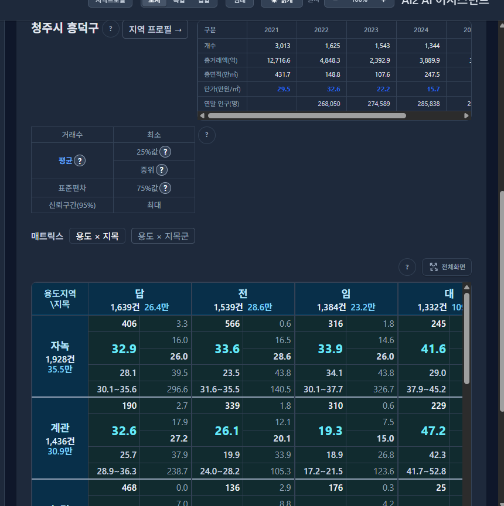

핵심 이해
통계는 표의 의미를 확인하는 데서 시작합니다
평균을 계산하기 전에 먼저 물어야 할 질문이 있습니다. 무엇을 한 건으로 세었으며, 각 열의 값은 무엇을 뜻할까요? 같은 숫자라도 면적인지, 지역을 구분하는 코드인지에 따라 계산과 해석이 달라집니다.
이 장을 읽으면 관측 단위와 변수를 구별하고, 변수의 유형에 맞는 요약 방법을 선택하며, 단위와 결측값을 확인할 수 있습니다. 선수 지식은 필요하지 않습니다.
관측 단위와 변수
한 행이 무엇을 나타내는지 먼저 정합니다
데이터(data)는 관찰하거나 측정해 기록한 값입니다. 통계 분석에서는 이를 일정한 구조의 표로 정리하는 경우가 많습니다. 관측 단위(observational unit)는 값을 기록하는 대상이며, 변수(variable)는 그 대상에서 기록한 특성입니다. 특정 행과 열에 기록된 값은 그 변수의 관측값입니다.
거래 자료라면 한 행을 거래 한 건으로 정할 수 있습니다. 건물 자료라면 한 행이 건물 하나이고, 지역별 연간 통계라면 ‘한 지역의 한 해’가 한 행입니다. 같은 건물이 두 번 거래되었다면 거래는 두 건이지만 건물은 하나입니다. 따라서 행의 수가 곧 서로 다른 건물 수라는 뜻은 아닙니다.
그림 1에서 7번의 구분은 상업, 면적은 22㎡, 층은 1, 단가는 480만원/㎡입니다. 이 네 값은 같은 관측을 설명합니다. 번호는 관측을 찾기 위한 식별자이며, 번호가 크다고 면적이나 가격이 크지는 않습니다.
변수의 유형
이름을 구분하는 값과 양을 재는 값을 나눕니다
범주형 변수는 대상을 종류로 구분합니다. 이 예제의 주거·상업이 해당합니다. 범주별로 몇 건인지, 전체 중 어느 정도인지 요약할 수 있습니다. 수치형 변수는 크기를 세거나 측정한 값입니다. 면적과 단가는 수치형 변수입니다.
수치형 변수는 다시 세어서 얻는 이산형과 측정해서 얻는 연속형으로 구분합니다. 거래 건수는 0건, 1건, 2건처럼 정수로 셉니다. 면적은 측정 정밀도에 따라 84㎡, 84.2㎡, 84.23㎡처럼 표현할 수 있습니다. 자료에 정수로 기록되어 있다는 이유만으로 면적을 이산형으로 바꾸지는 않습니다.
층은 보통 정수로 기록되지만 단순한 개수와는 다릅니다. 지하층 표기, 빠진 층 번호, 실제 높이의 차이가 있을 수 있습니다. 층 번호를 높이의 대용 변수로 쓰려면 기록 규칙과 해석을 함께 확인해야 합니다.
숫자로 저장된 법정동 코드도 범주를 식별하는 값입니다. 코드의 합이나 평균에는 지역의 특성을 설명하는 의미가 없습니다. 반대로 범주를 0과 1로 표시한 지시변수는 평균이 ‘1로 표시한 범주의 비율’이라는 의미를 갖습니다. 숫자 모양이 아니라 값을 어떻게 정의했는지가 기준입니다.
측정척도
어떤 비교가 의미 있는지 살펴봅니다
측정척도는 값 사이에서 어떤 비교가 가능한지를 구분합니다. 범주형·수치형이 값의 성격을 나눈다면, 척도는 순서·차이·비율의 의미를 더 자세히 살펴보는 기준입니다.
| 척도 | 예 | 읽을 수 있는 의미 |
|---|---|---|
| 명목 | 용도 구분 | 같은 종류인지 다른 종류인지 |
| 서열 | 낮음·보통·높음 | 순서. 단계 사이의 간격은 보장되지 않음 |
| 등간 | 섭씨온도 | 차이. 20℃가 10℃보다 두 배 덥다는 뜻은 아님 |
| 비율 | 면적 | 차이와 비율. 100㎡는 50㎡의 두 배 면적 |
예를 들어 상태 등급에 1·2·3을 붙였다고 해서 1에서 2로의 변화와 2에서 3으로의 변화가 같아지는 것은 아닙니다. 등급 평균을 제시하려면 같은 간격으로 해석할 수 있는지 근거가 필요합니다. 척도는 계산을 기계적으로 금지하는 규칙이 아니라, 계산 결과에 붙이는 의미를 점검하는 기준입니다.
단위와 자료 사전
숫자 옆의 단위도 데이터의 일부입니다
면적 100이라는 값은 100㎡인지 100평인지 알아야 해석할 수 있습니다. 단가도 만원/㎡와 만원/평이 다릅니다. 서로 다른 단위의 숫자를 같은 열에 섞으면 평균과 그래프가 모두 왜곡됩니다. 단위가 같아도 전용면적과 연면적처럼 측정 대상이 다를 수 있습니다.
다음 산점도는 공통 예시의 면적을 가로축, 단가를 세로축에 놓았습니다. 두 값의 단위는 다르지만 각 축을 따로 정의했으므로 한 관측의 두 특성을 함께 살펴볼 수 있습니다.
자료 사전에는 변수 이름, 정의, 단위, 허용값, 결측 표기를 기록합니다. 예를 들어 ‘면적’이라는 이름만 적기보다 ‘거래 대상 면적, ㎡, 미확인은 빈칸’처럼 적어 두면 다른 사람이 표를 읽을 때도 의미가 유지됩니다. 분석 전에 자료의 정의가 충분하지 않다면 그 한계를 먼저 기록해야 합니다.
이 장에서 사용한 자료와 계산 확인
출처는 프로젝트 학습계획 §16.4의 ‘흥덕 예시 30건’입니다. 실제 거래 원천은 확인되지 않았으므로 이 장에서는 학습 예시로만 사용합니다. 거래 시점·면적 기준 등이 확인된 실제 시장 자료로 해석하지 않습니다.
주거 15건, 상업 15건이며 각각 15÷30=50%입니다. 면적의 최솟값·최댓값은 22·310㎡, 단가는 62·480만원/㎡입니다. 산점도에는 30개 관측을 모두 표시했습니다.
공통 예시 원자료(JSON)에서 값을 확인할 수 있습니다. 그림 4의 결측 예제는 별도의 가상 자료입니다.
결측값과 자료 품질
모르는 값은 0과 다릅니다
결측값(missing value)은 기록되어야 할 값을 알 수 없거나 사용할 수 없는 상태입니다. 가격이 비어 있다는 사실은 가격이 0이라는 뜻이 아닙니다. 미조사, 입력 누락, 해당 없음도 가능한 한 구분해서 기록해야 합니다.
단가가 100, 120, 미확인인 가상 자료를 생각해 봅시다. 확인된 두 값의 평균은 (100+120)÷2=110입니다. 미확인을 0으로 바꾸면 (100+120+0)÷3≈73.3으로 낮아집니다. 이는 새로운 가격을 관측한 결과가 아니라 임의로 넣은 값 때문에 생긴 차이입니다.
그렇다고 결측 행을 언제나 삭제하면 되는 것도 아닙니다. 특정 유형의 값이 더 자주 누락된다면 남은 자료의 구성이 달라집니다. 결측의 수와 이유, 계산에 실제로 사용한 건수를 함께 확인하고, 처리 방법에 따른 결과 차이를 점검해야 합니다.
중복 기록도 같은 원칙으로 살펴봅니다. 값이 같다는 이유만으로 서로 다른 거래를 삭제해서는 안 되며, 같은 거래가 두 번 들어온 것인지 식별 정보와 기록 과정을 확인해야 합니다.
확인 문제
표의 의미를 직접 설명해 보세요
- 주거를 1, 상업을 2로 저장했습니다. 이 코드의 평균 1.5를 ‘중간 용도’라고 해석할 수 있을까요?
답과 해설
아니요. 1과 2는 이름을 바꿔 적은 표식입니다. 두 용도의 중간을 측정한 값이 아닙니다. 코드 대신 범주별 건수나 비율을 제시합니다.
- 한 건물이 두 번 거래되어 표에 두 행이 있습니다. 표본은 건물 두 개인가요?
답과 해설
관측 단위가 거래라면 거래 두 건, 건물로 세면 건물 하나입니다. 같은 건물의 반복 거래는 서로 독립적이지 않을 수 있으므로 이후 추론이나 검증에서도 구분해야 합니다.
- 면적 84와 84.00은 변수 유형이 다른가요? 면적이 빈칸인 행은 0㎡로 읽어도 될까요?
답과 해설
표시 자릿수만으로 변수 유형은 바뀌지 않습니다. 면적은 측정값입니다. 빈칸은 정의된 결측 표기를 확인해야 하며, 실제로 0㎡라는 관측 근거 없이 0을 넣어서는 안 됩니다.
CH2 Macro에서 읽기
요약표의 행과 원자료의 행을 구별합니다
토지 기본통계의 용도지역×지목 표는 거래를 범주별로 묶어 요약한 표입니다. 요약표의 한 칸이 원자료의 거래 한 건은 아닙니다. 해당 범주에 포함된 거래들의 건수와 단가 요약을 읽는 자리입니다.

표를 볼 때는 먼저 어떤 지역·기간·유형이 선택되었는지 확인하세요. 이어서 건수가 거래 수인지 다른 단위의 수인지, 단가의 면적 기준과 단위가 무엇인지 읽으면 숫자를 해석할 준비가 됩니다.
정리와 참고자료
무엇을 세었고 무엇을 측정했는지 확인하세요
분석의 출발점은 관측 단위, 변수의 정의, 단위와 결측 표기를 확인하는 일입니다. 범주형 변수는 종류별 건수와 비율로, 수치형 변수는 크기와 퍼짐으로 살펴봅니다. 숫자로 기록되어 있어도 식별 코드에는 크기나 평균의 의미가 없을 수 있습니다.
다음 주제는 이 자료가 어떤 전체에서 어떻게 모였는지입니다. 02장 ‘모집단과 표본, 자료 수집과 편향’에서 자료가 모인 과정과 해석 범위를 살펴봅니다.
- OpenStax, Introductory Statistics 2e §1.2 — 범주형·수치형, 이산형·연속형의 구분 참고.
- OpenStax, Introductory Statistics 2e §1.3 — 빈도와 측정척도 참고.
본문과 그림은 이 과정의 예제에 맞춰 새로 작성했습니다. 참고자료 확인: 2026-10-07.